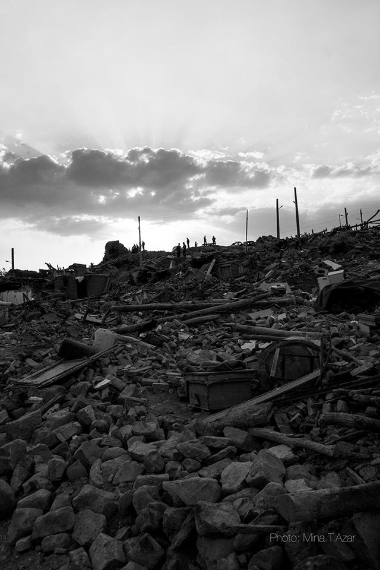

|
|
گزارش از روستای زلزله زده باجه باج
مینا طلوعی آذر
چهار شنبه1 شهریور 1391
روستای باجه باج از توابع شهرستان هریس استان آذربایجان شرقی
تخریب : 100 درصد
جمعیت : 160 خانوار
تعداد کشته شدگان : 45 نفر
تعدادی زخمی در بیمارستان های امام رضا و شهدای تبریز بستری شده اند.
زلزله 6.3 ریشتری آذربایجان از این روستا شروع شده است، ما در تاریخ 27/05/1391 به این روستا مراجعه کردیم. هنوز با وجود حضور برخی مقامات عالی رتبه کشور، این روستا وضعیت نامناسبی برای زندگی دارد.

آنچه در این بازدید دیده و شنیده ام به شرح ذیل است:
مهمترین و اساسی ترین مشکل منطقه آلوده بودن آن به بوی تعفن لاشه حیوانات و گرد و غبار بیش از حد و عدم پاکسازی منطقه بعد از یک هفته است.
مردم منطقه هنوز بر روی تلی از خاک و زیر آورها به دنبال وسایل سالم زندگیشان هستند، شایان ذکر است هر لحظه امکان ریزش این آوارها به علت پس لرزه های متعدد وجود دارد. در منطقه با دختر جوانی که 17 سال دارد و تازه ازدواج کرده و همسر وی دهیار است صحبت می کنیم، وی می گوید زمانی که زلزله آمد آن ها از خانه بیرون آمدند، خانه پشت سر آن ها خراب شده و آن ها تا ساعت 12 ظهر همان روز منتظر چادرهای گروه های امداد بوده اند.
نگرانی دیگر روستاییان از وضعیت جوی و آب و هوایی و بارندگی های شدید است.
به گفته سمیرا دهقان ( 25 ساله – باردار 4 ماهه )؛ هیچ امداد گر یا بهیار مربوطه ای برای رسیدگی به وضعیت بیماران و زنان باردار در منطقه وجود ندارد. او می گوید وضعیت بهداشت منطقه مناسب نیست و همانطور که به لاشه حیوانات اشاره می کند می گوید که پس از گذشت یک هفته از وقوع زلزله و با توجه به موقعیت جغرافیایی روستا و بادهای شدید هنوز لاشه های حیوانات جمع آوری نشده و این باعث آلودگی شدید منطقه شده است.
کودکان با دست و صورت های کثیف بین مگس ها و آوارها بازی می کنند.
اظهارات زنان و اهالی روستا مبنی بر کمک رسانی بسیار رضایت بخش بود، همچنین آن ها اظهار داشتند تمامی کمک ها مردمی بوده و هیچ نهاد دولتی به این روستا رسیدگی نکرده است، بر اساس مشاهدات عینی خودم تعدادی خودروی شخصی که حامل مواد بهداشتی و غذایی بودند در منطقه حضور داشتند.
هنوز می شد در چشم زنان آن منطقه امید را دید که لابلای آوار و خروارها خاک دنبال تکه های پاره پاره و شکسته شده زندگی خود می گشت، چشم هایی که به دار قالی های شکسته ای خیره بودند که زمانی با نقش ها و طرح های ریز بافتشان زینت بخش خانه های مجلل شهری بودند، چشم هایی که به گذشته ویران شده خود لبخند می زدند، چشم هایی که فروتنانه خستگی خود را پنهان می کردند، چشم هایی که با حسرت به بازی کودکان در لابلای آوارها می نگریستند و هنوز تصویر کودکانی را به خاطر می آوردند که بر روی سینه مادرانشان به خاک سپرده شدند.
اینجا باجه باج است؛ چشم هایی که نگاهت می کنند ولی نمی بینند.